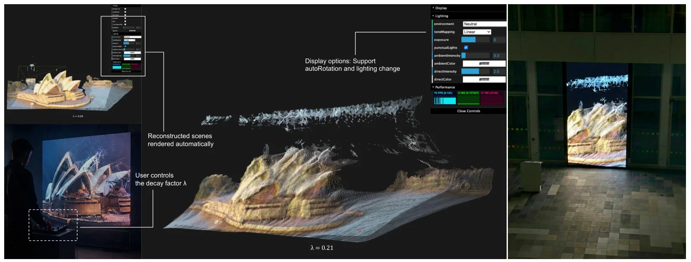
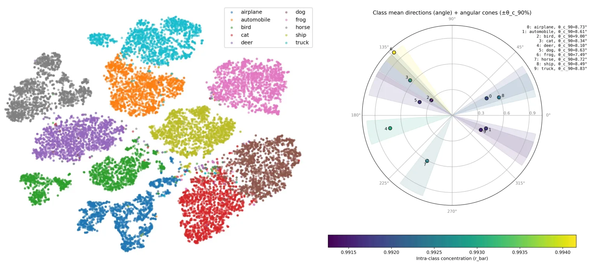
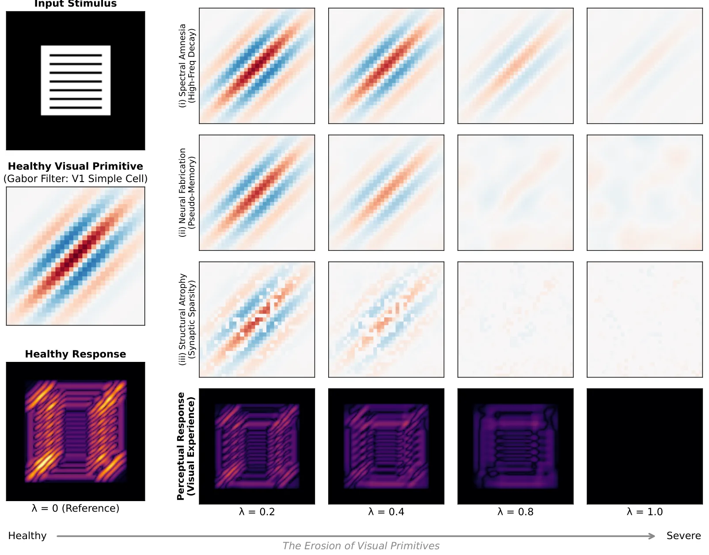
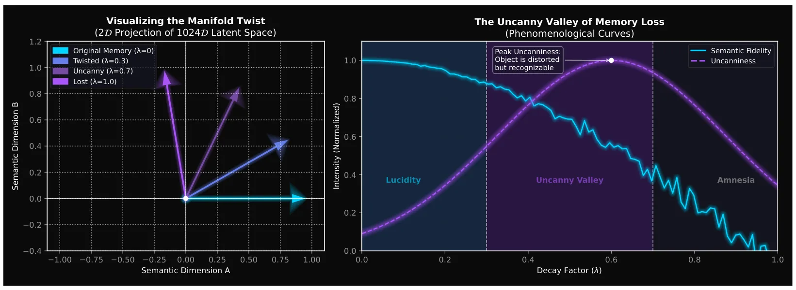

先验的回声：关于遗忘的计算现象学Echoes of the Prior: A Computational Phenomenology of Forgetting
艺术/认知隐喻属性强，缺少工程 benchmark；仅作为模型先验退化可视化案例保留，SLAM/GNSS 相关性弱。
一句话工作总结
该交互式艺术作品通过让前馈三维重建模型受控退化，展示“先验遗忘”对三维感知输出的影响。
摘要
记忆不仅是数据存储，也被视作现实感的脚手架。当生物记忆消退时，世界并不只是变黑，而会回退为难以识别的混沌。Echoes of the Prior 是一个交互式装置，试图可视化这种关于遗忘的主观现象学。作者通过在前馈式三维重建模型中引入受控突触衰退，构造关于大脑预测先验被侵蚀的艺术类比。该作品将神经网络定位为认知代理，而非工程工具；其结构性退化用于唤起失去世界把握时的迷失、诗意和恐惧体验。作者希望这一框架能促使社区探索神经形态美学在呈现智能脆弱性方面的潜力。
Memory is not merely the storage of data; it is the scaffolding of reality. When biological memory fades, the world does not simply turn black; it regresses into an unrecognizable chaos. Echoes of the Prior is an interactive installation that attempts to visualize this subjective phenomenology of forgetting. By inducing controlled synaptic decay within a Feed-Forward 3D Reconstruction model, we create an artistic analogy for the erosion of the brain's predictive priors. We position the Neural Network not as a tool for engineering, but as a cognitive proxy - a silicon brain whose structural degeneration evokes the disorienting, poetic, and terrifying experience of losing one's grip on the world. Ultimately, we offer this framework as a catalyst, inviting the wider community to explore the uncharted potential of neuromorphic aesthetics in visualizing the fragility of intelligence. Interactive demo see https://decart-4d.github.io/.
中文解读摘录
- 作者：Matthew Cong, Francis Williams, Jonathan Swartz, Mark Harris, Sanja Fidler, Ken Museth；类别：cs.CV / cs.DC / cs.GR / cs.LG；发布日期：2026-06-10；备注：14 pages, 6 tables, 2 figures；采集 score=13
- 核心问题：3DGS 在真实大场景重建中受单 GPU 显存与算力限制，难以扩大到城市级、街景级细节，同时多卡分布式实现通常要求模型代码显式处理跨设备通信。
- 方法亮点：提出一个 PyTorch backend，把 Gaussian 参数和 splatting operators 通过 CUDA unified memory 与 NVLink 分布到多 GPU；分布发生在 operator 层，模型代码可把多张 GPU 视作聚合 PyTorch device，不需要手写跨设备通信。
- 结果信号：展示了包含 超过 10 亿 Gaussian splats 的城市级重建，数量超过当前 SOTA 25 倍以上，并保持街景级细节。
- 关注价值：这更像 3DGS 系统/基础设施论文，不是 SLAM 算法；但对大尺度机器人地图、城市数字孪生和长序列 Nerfstudio/3DGS 重建非常关键。后续应关注显存分页、NVLink 依赖、训练/渲染吞吐，以及是否能接入已有 COLMAP/SLAM 位姿和地图分块流程。
图表/页面预览

{kind=link}

{kind=link}

{kind=link}

{kind=link}
